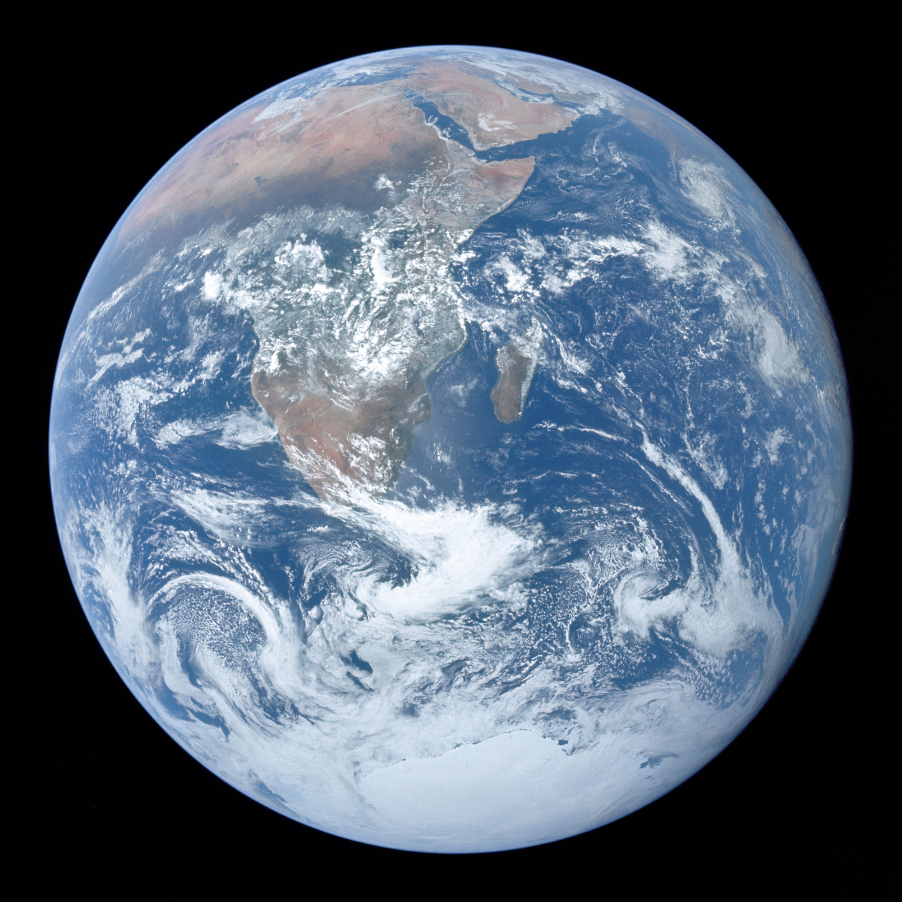

Ziemia
Ziemia jest trzecią planetą od Słońca i jedynym znanym nam miejscem w Wszechświecie, gdzie istnieje życie. Nasza planeta ma idealną temperaturę, atmosferę i wodę, które umożliwiają istnienie milionów gatunków roślin i zwierząt. To dom ponad 8 miliardów ludzi, którzy zamieszkują każdy kontynent i ocean.
📊 Podstawowe Dane Astronomiczne
🎨 Model w Skali 1:10¹⁰
Średnica modelu
Odległość od Słońca na modelu
🌙 Księżyce Ziemi
| Księżyc | Średnica orbity rzeczywista (km) | Średnica orbity na modelu (mm) | Status na modelu |
|---|---|---|---|
| Księżyc | 384 400 | 76,88 | ✓ Mieści się na podstawie |
Księżyc to naturalny satelita Ziemi, a jedynym znanym nam księżycem w obrębie Układu Słonecznego, który zamieszkały ludzie. Średnica orbity Księżyca (76,88 mm na modelu) jest mniejsza niż średnica podstawy modelu (78 mm), dlatego Księżyc mieści się na podstawie przy modelu Ziemi.
📖 Ciekawostki
- Ziemia jest jedyną znaną planetą z aktywnym życiem biologicznym
- Nasz planeta tworzy jeden pełny obieg wokół Słońca w ciągu 365 dni i 6 godzin, dlatego co 4 lata mamy rok przestępny
- Atmosfera Ziemi zawiera 78% azotu, 21% tlenu i 1% innych gazów
- Oceany pokrywają około 71% powierzchni Ziemi i zawierają 97% wody na planecie
- Księżyc powoduje pływy oceaniczne i stopniowo oddala się od Ziemi (o około 3,8 cm rocznie)
- Wiek Ziemi wynosi około 4,54 miliarda lat